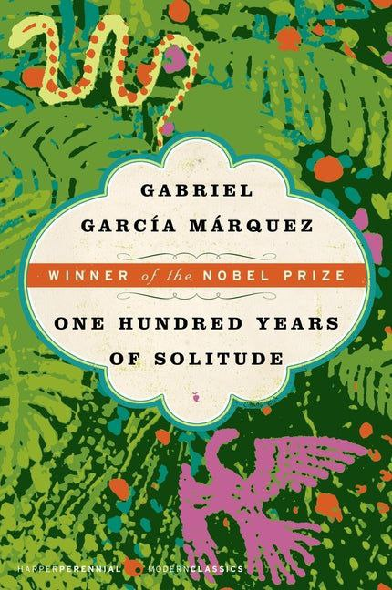

القراءة من الهوايات التي أحبها لأنها تساعدني على اكتشاف أفكار وقصص جديدة وتوسيع المعرفة.
مئة عام من العزلة – غابرييل غارسيا ماركيز

"بعد سنوات طويلة، حين كان العقيد أورليانو بوينديا يواجه فرقة الإعدام، تذكر ذلك العصر البعيد حين أخذه والده ليريه الجليد."